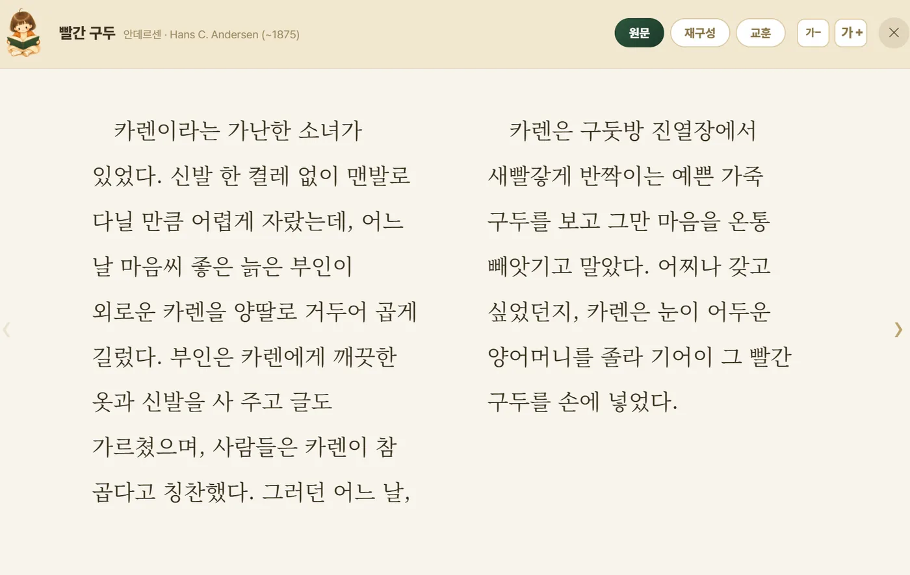
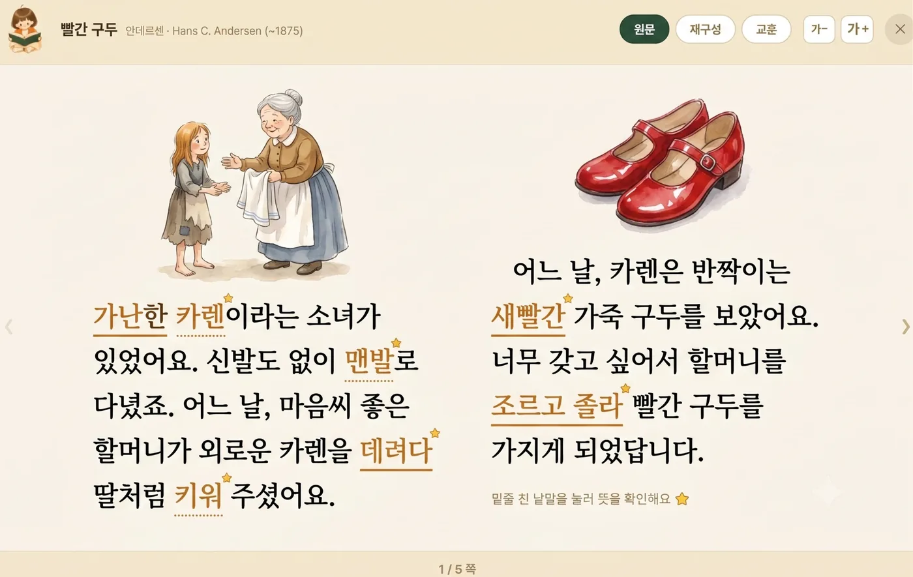
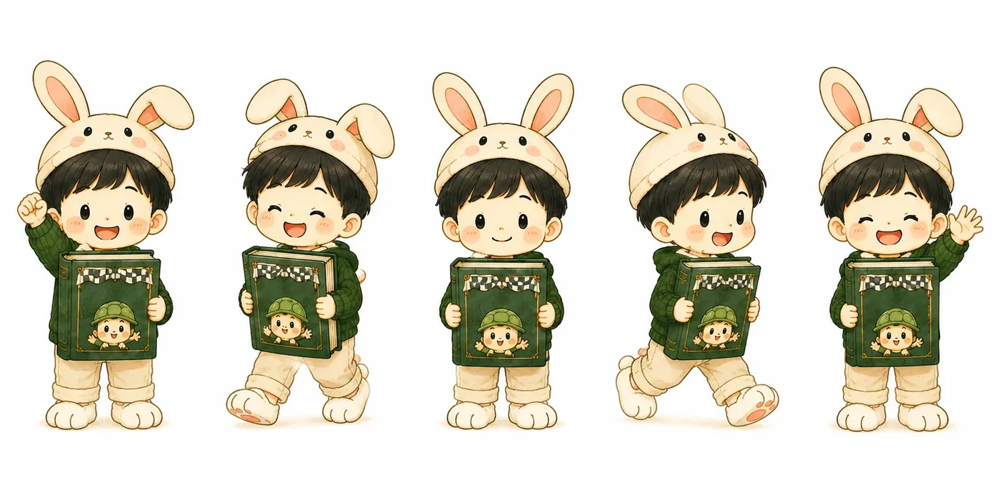
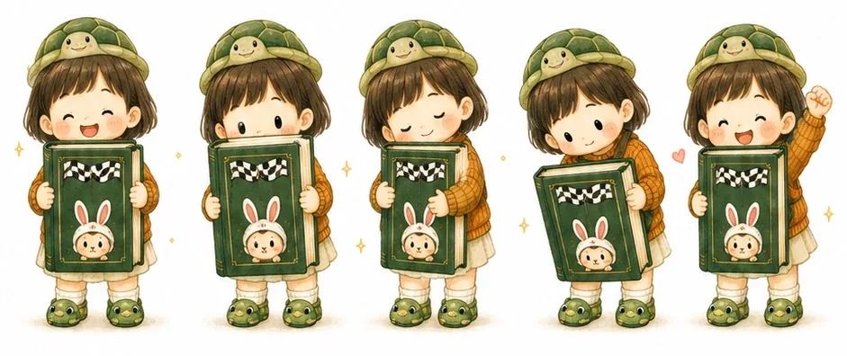

교실을 위한 어린이 명작 도서관
 부기
부기한 반 아이들이
같은 책을 끝까지 읽습니다.

bookie.io.kr — 실제 서비스 첫 화면입니다
차례
모두 24쪽입니다. 아래 다음 › 을 누르거나 방향키로 넘기시면 됩니다.
1장 · 왜 만들었나
선생님도
보셨을 겁니다.
부기를 만든 두 가지 이유 가운데 첫째
한 쪽에 모르는 낱말이 서너 개 나오면 아이는 거기서 멈춥니다. 문장을 놓치면 이야기를 놓치고, 그다음 쪽은 넘기지 않습니다.
스무 명 넘는 교실에서 한 명씩 붙어 뜻을 알려 줄 시간은 없고요. 결국 처음부터 읽을 수 있던 아이만 계속 읽습니다.
읽기 싫어서가 아니라, 읽을 수 없게 되어 있는 겁니다.
하루라도 책을 읽지 않으면 입안에 가시가 돋는다一日不讀書 口中生荊棘 안중근이 뤼순 감옥에서 쓴 글씨 · 보물 제569-2호
1장 · 왜 만들었나
과제는 나오는데 그 내용을 설명하지 못하는 아이, 늘고 계시죠. 교사도 다르지 않습니다. 바빠서 맡기고, 맡긴 만큼 감이 떨어집니다.
못 쓰게 막아서는 풀리지 않습니다. 어디까지 맡기고 어디서부터 직접 할지를 수업 안에서 정해 주는 편이 낫습니다.
맡길수록 감이 떨어지는 것은 아이만이 아닙니다.
배우기만 하고 생각하지 않으면 얻는 것이 없고, 생각만 하고 배우지 않으면 위태롭다學而不思則罔 思而不學則殆 공자, 『논어』 위정편
2장 · 무엇이 알려져 있나
칸 하나가 학생 100명 중 한 명입니다.
PISA는 만 15세 학생의 읽기를 재는 국제 조사입니다. 2022년 우리나라 평균은 515점으로 OECD 상위권이었습니다. 그런데 같은 조사에서 하위 성취수준이 14.7%였습니다.
OECD는 2수준을 사회에 온전히, 그리고 제 몫을 하며 참여하는 데 필요한 기초 수준으로 봅니다. 2수준은 보통 길이의 글에서 중심 생각을 찾고, 눈에 잘 띄지 않는 정보를 이어 기본적인 추론을 하는 정도입니다.
그 아래라는 것은 교과서 한 단락에서 무엇이 요점인지 스스로 집어내기 어렵다는 뜻입니다. 스물네 명 학급이면 서너 명입니다.
2장 · 무엇이 알려져 있나
1년에 책을 한 권이라도 읽은 사람
종이책·전자책·오디오북을 모두 더한 종합독서율입니다.
1년에 읽은 권수
학생 때는 거의 다 읽습니다. 학교가 읽게 하니까요. 문제는 그다음입니다.
그 습관이 남지 않으면 어른이 되어 절반 넘게 책을 놓습니다. 아이에게 읽는 힘을 붙여 줄 수 있는 시기가 그리 길지 않다는 뜻입니다.
2장 · 무엇이 알려져 있나
글의 낱말 중 아는 것의 비율
글의 낱말 가운데 몇 %를 알아야 사전 없이 읽을 수 있는지를 잰 연구가 있습니다. 80%만 알 때는 아무도 충분히 이해하지 못했고, 90~95%에서도 대부분 이해하지 못했습니다. 98%는 되어야 도움 없이 읽었습니다.
2%면 낱말 쉰 개에 하나입니다. 한 쪽에 이백 낱말이라면 모르는 낱말 넉 개가 그 쪽 전체를 막습니다. 1쪽에서 '서너 개'라고 한 것이 이 숫자입니다.
2장 · 무엇이 알려져 있나
잘 읽는 아이는 더 읽어
더 잘 읽게 되고,
못 읽는 아이는 덜 읽어
더 뒤처집니다.
읽기의 마태 효과 · Keith E. Stanovich, 1986
1986년 스타노비치가 '마태 효과'라 이름 붙인 현상입니다. 마태복음의 "무릇 있는 자는 받아 풍족하게 되고"에서 따왔습니다.
읽기가 되는 아이는 읽는 양이 늘고, 그만큼 어휘와 배경지식이 늘어 다음 책이 더 쉬워집니다. 안 되는 아이는 반대로 갑니다. 그냥 두면 학년이 올라갈수록 벌어집니다.
교실에서 "처음부터 읽을 수 있던 아이만 계속 읽는다"고 느끼셨다면, 착각이 아닙니다.
2장 · 무엇이 알려져 있나
99편의 연구가 가리킨 방향
연구진은 이것을 '상승 나선'이라 불렀습니다.
유아부터 대학생까지 99편의 연구를 모아 분석한 결과입니다. 많이 읽은 아이가 더 잘 읽었고, 잘 읽게 되니 더 읽었습니다. 어느 쪽이 원인인지를 가리기보다, 둘이 서로를 밀어 올린다고 보았습니다.
그래서 부기는 끝까지 읽는 것 하나에 붙어 있습니다. 완독이 다음 완독을 부르는 쪽으로 방향이 나 있기 때문입니다.

3장 · 아이가 읽는 화면
사전을 찾으러 나갔다 오는 동안 이야기가 끊기지 않게 했습니다.
그 학년 수준으로 풀어 쓴 뜻이라, 뜻풀이를 읽다가 또 막히는 일이 없습니다. 읽던 쪽은 그대로 있고요.

3장 · 아이가 읽는 화면
중도입국 학생이 같은 시간에 같은 대목을 읽습니다.
그 아이만 따로 자료를 만들어 주지 않아도 되고, 혼자 다른 것을 하고 있지 않아도 됩니다. 수업이 끝나면 같은 이야기로 말할 수 있고요.
그럼 나랑 시합하자!
Vậy thì hãy thi đấu với tôi!「토끼와 거북이」 같은 대목 — 거북이가 토끼에게
3장 · 아이가 읽는 화면
같은 「빨간 구두」의 같은 대목입니다. 원문 · 재구성 · 교훈을 눌러 보세요.
원문은 원작의 문장과 호흡을 살린 글, 재구성은 그 학년 눈높이로 다시 쓴 글입니다. 누구에게 무엇을 줄지는 진단 결과가 정합니다.
3장 · 아이가 읽는 화면누구는 원문을, 누구는 재구성을


3장 · 아이가 읽는 화면
인물에게 무엇을 물을지 정하려면 이야기를 알고 있어야 하니까요. 질문을 고르는 사이에 아이는 이야기를 한 번 더 훑습니다.
왼쪽에서 말을 걸어 보세요. 저학년은 인물에게 반말로 말을 겁니다. 그 말투에 아이가 인물을 어떻게 이해했는지가 그대로 나옵니다.
특허 등록 아바타 기반 도서 등장인물 대화형 독서 활동
토끼야, 낮잠 잘 때 무슨 생각 했어?아이가 고를 수 있는 질문 가운데 하나. 토끼는 "금방 일어나서 뛰면 된다고 생각했어… 그게 실수였지" 하고 답합니다.
3장 · 아이가 읽는 화면
따로 시험을 치지 않습니다. 평소 독서활동 기록에서 문해력 6영역과 사고력 6영역을 뽑습니다.
왼쪽에서 단계를 눌러 보세요. 그 아이가 「빨간 구두」를 어떤 형태로 받는지 바뀝니다. 씨앗 단계는 두세 문장짜리 재구성부터, 숲 단계는 원문에 확장 읽기까지.
새로운 친구의 이름을 지어 주세요

3장 · 아이가 읽는 화면
포인트도, 상점도, 뽑기도 없습니다. 마지막 쪽을 넘겨야 그 책의 소품이 열립니다.
그래서 친구 아바타만 봐도 무슨 책을 읽었는지 압니다. 처음 들어온 아이는 왼쪽처럼 이름부터 짓습니다.
3장 · 아이가 읽는 화면「토끼와 거북이」 한 권에서 갈라지는 두 소품




빈 칸은 일부러 남겨 둡니다. 채울 자리가 보여야 다음 책을 폅니다.
3장 · 아이가 읽는 화면
읽은 책과 그때 쓴 글, 부기와 나눈 대화가 서고에 그대로 쌓입니다.
학년이 올라가도 계정이 그대로라 지워지지 않고요. 빈 칸이 남아 있는 것은 일부러입니다. 채울 자리가 보여야 다음 책을 폅니다.
좋아요는 있지만 순위는 매기지 않습니다. 몇 등인지 세는 대신 친구 것을 구경하다 가게 두었습니다.
3장 · 아이가 읽는 화면
그림과 독후감을 사진으로 찍어 올리면 반 친구들이 봅니다.
좋아요는 있지만 순위는 매기지 않습니다. 몇 등인지 세는 대신 친구 것을 구경하다 가게 두었습니다.
수업 구성 고르기 — 눌러 보세요
4장 · 선생님이 쓰는 화면
시수에 맞는 구성을 고르시면 차시가 펼쳐집니다. 온책읽기 8차시, 국어수업 4차시, 그림책 3차시, 아침활동 4차시.
왼쪽에서 직접 해 보세요. 활동은 빼고, 더하고, 순서를 바꾸시면 됩니다. 쓰시던 활동지와 PPT를 올려 붙이실 수도 있습니다.
4장 · 선생님이 쓰는 화면자료는 이미 들어 있습니다 — 발문까지


우리 반 입장 코드를 입력하세요
숫자 여섯 개를 눌러 보세요
4장 · 선생님이 쓰는 화면
1학년 스무 명에게 아이디와 비밀번호를 나눠 주다 보면 첫 시간이 그대로 가죠. 그 단계를 없앴습니다.
학급을 만들면 나오는 여섯 자리를 칠판에 띄우시면 됩니다. 이메일도, 비밀번호 재발급도 없습니다. 왼쪽에 아무 숫자나 넣어 보세요.
눌러서 바꿔 보세요. 기본값은 닉네임입니다.
4장 · 선생님이 쓰는 화면
완독 권수, 연속 독서일, 즐겨 읽는 분야가 아이별로 정리돼 있습니다. 상담 기록으로 옮겨 적지 않아도 되고요.
기본은 닉네임이고 실명은 선생님만 보십니다. 왼쪽에서 눌러 바꿔 보세요.
5장 · 기관이 보는 화면
학교를 누르면 학급이, 학급을 누르면 아이가 나옵니다. 학교가 실적을 모아 올리지 않아도 아이가 읽는 순간 여기 반영됩니다.
선생님이 쓰신 관찰노트와 감정일기는 이 화면에 열리지 않습니다. 관리자는 조회만 하고, 담당 학교 밖 자료는 브라우저까지 오지 않습니다.
마지막 쪽
소속·성명·이메일 세 가지면 됩니다. 확인한 뒤 테스트 아이디와 초기 비밀번호, 활용 가이드를 메일로 보내 드립니다.
학급 하나 만드는 데 5분이면 충분합니다. 신분증이나 통장 사본은 지금 받지 않습니다 — 사례비 지급이 정해진 분에게만 따로 요청드립니다.
신분증에는 주민등록번호가 들어가고, 이는 개인정보보호법상 고유식별정보에 해당해 별도 절차와 보관 요건이 붙습니다. 그래서 신청 단계에서는 제출 의사만 확인하고, 사례비 지급이 확정된 분에게만 안전한 경로로 따로 요청드립니다.